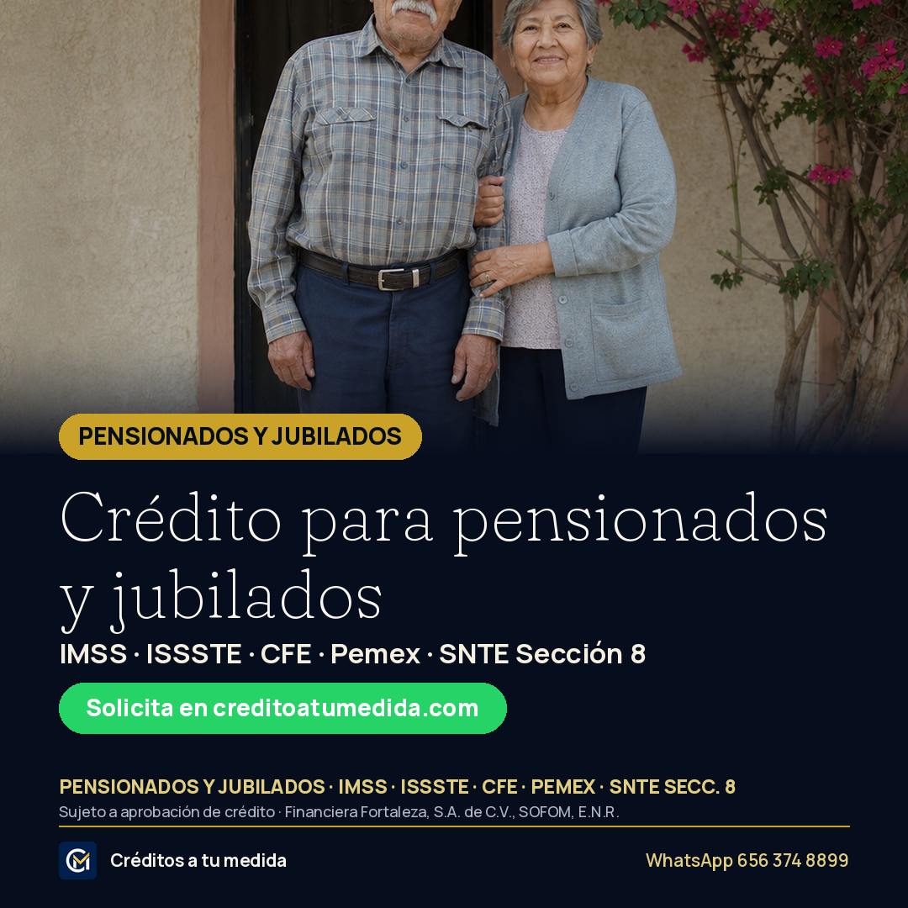
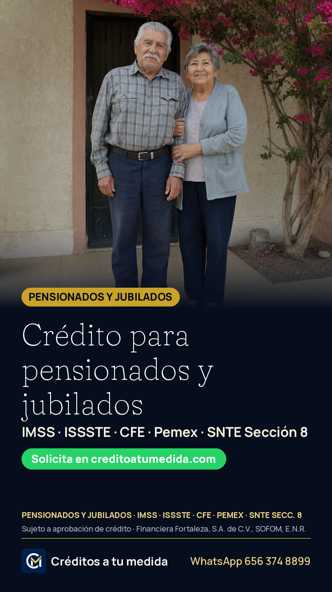
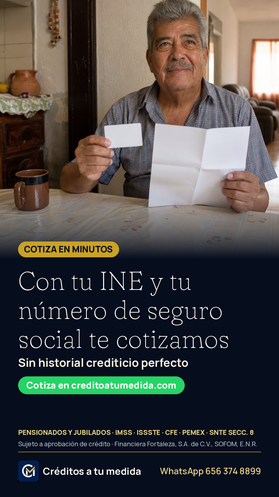
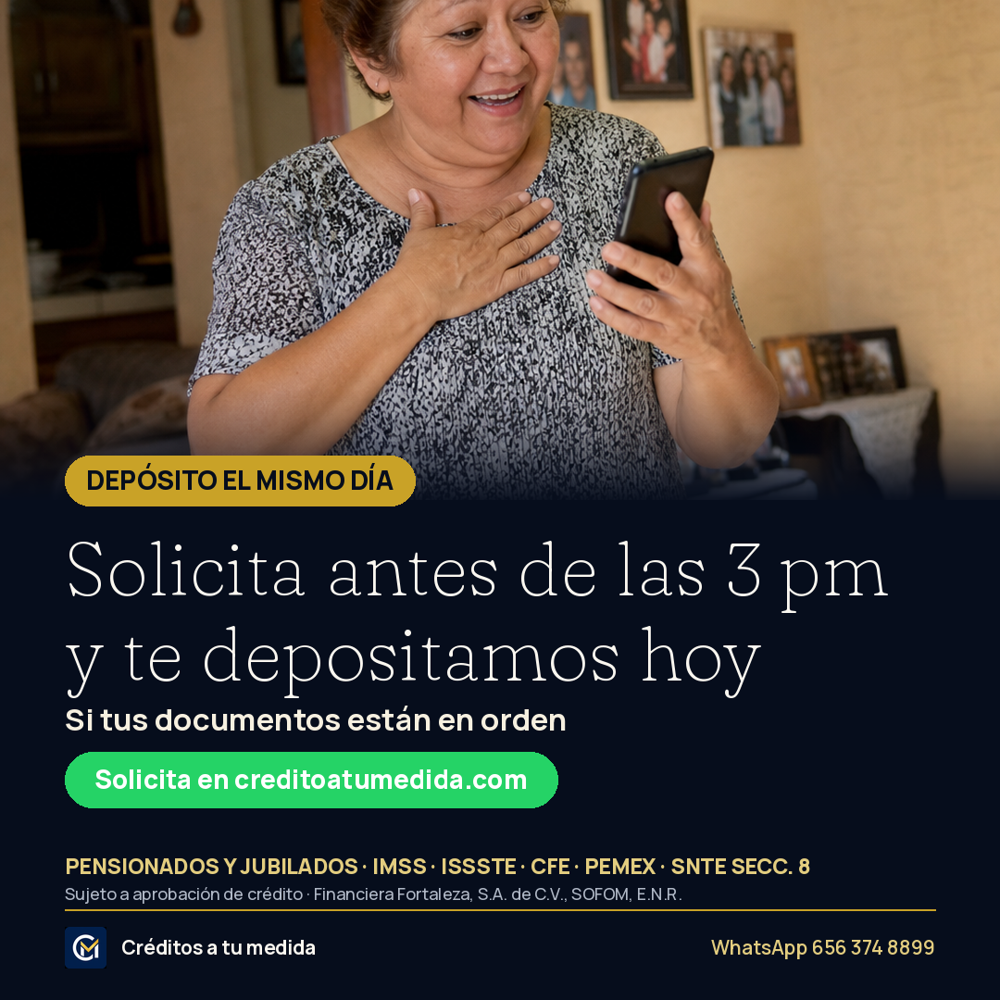

¡Hola, Ciudad Juárez! 👋 Somos Créditos a tu medida y ya estamos en Facebook. Atendemos a pensionados y jubilados del IMSS, ISSSTE, CFE, Pemex y SNTE Sección 8, en persona, en nuestra oficina de Zona Pronaf (Benjamín Franklin 3220, por la entrada de Subway). Aquí vamos a compartir cómo funciona el crédito vía nómina, qué documentos se piden según cada dependencia y respuestas a sus dudas, explicado con calma. Cuéntenos en los comentarios: ¿qué les gustaría saber primero? Leemos y contestamos todo. 💛
Equipo Créditos a tu medida: nuestro horario es lunes a viernes 9:00-18:00 y sábado 9:00-14:00. Si tiene una duda, déjela aquí y le respondemos hoy mismo. 👇


Crédito vía nómina para pensionados y jubilados del IMSS, ISSSTE, CFE, Pemex y SNTE Sección 8 en Ciudad Juárez. El pago se descuenta directo de la pensión, sin filas y con un asesor que lo acompaña de principio a fin. Solicite en línea en minutos.
Pensionados y jubilados de IMSS, ISSSTE, CFE, Pemex y SNTE Sección 8: en Créditos a tu medida el trámite es claro y en persona, en Zona Pronaf. Deje sus datos en nuestra página y un asesor le contacta.
Crédito para pensionados y jubilados
IMSS, ISSSTE, CFE, Pemex y SNTE 8
Sujeto a aprobación de crédito
https://creditoatumedida.com/?utm_source=facebook&utm_medium=paid_social&utm_campaign=creditos_oct26&utm_content=ad-01

Con su INE y su número de seguro social le cotizamos. Así de fácil empezar su crédito vía nómina para pensionados y jubilados. No se necesita historial crediticio perfecto: cada caso se revisa de forma individual.
Cotizar no cuesta nada y toma pocos minutos. Deje su nombre y teléfono en creditoatumedida.com y un asesor le explica qué documentos necesita según su dependencia.
Con su INE y NSS le cotizamos
Cotice sin compromiso
Pensionados y jubilados · Cd. Juárez
https://creditoatumedida.com/?utm_source=facebook&utm_medium=paid_social&utm_campaign=creditos_oct26&utm_content=ad-02

Solicite antes de las 3:00 pm y, si sus documentos están en orden, su crédito se deposita ese mismo día. Crédito vía nómina para pensionados y jubilados del IMSS, ISSSTE, CFE, Pemex y SNTE Sección 8.
¿Lo necesita pronto? Antes de las 3 de la tarde entra el mismo día; después, al día siguiente. Inicie su solicitud en línea y un asesor le confirma en horario de oficina.
Depósito el mismo día
Solicite antes de las 3:00 pm
Sujeto a aprobación de crédito
https://creditoatumedida.com/?utm_source=facebook&utm_medium=paid_social&utm_campaign=creditos_oct26&utm_content=ad-03
Aquí un asesor le explica todo antes de firmar, con calma y sin letras chiquitas. Visítenos en Benjamín Franklin 3220, Int 22-D, Zona Pronaf (por la entrada de Subway), o inicie su solicitud en línea.
Sin call centers ni trámites que nadie explica. En Créditos a tu medida le atiende una persona, en oficina, de lunes a sábado. Deje sus datos y le apartamos un horario.
Atención en persona en Zona Pronaf
Le explicamos todo antes de firmar
Lun-Vie 9-18 · Sáb 9-14
https://creditoatumedida.com/?utm_source=facebook&utm_medium=paid_social&utm_campaign=creditos_oct26&utm_content=ad-04
Así funciona el crédito vía nómina: el pago se descuenta directo de la pensión, con un monto fijo. No hay que ir al banco ni acordarse de pagar cada mes. Para pensionados y jubilados del IMSS, ISSSTE, CFE, Pemex y SNTE Sección 8.
Un crédito con pagos fijos que se descuentan solos de la pensión. Conozca los requisitos según su dependencia en creditoatumedida.com.
Se descuenta directo de la pensión
Pagos fijos, sin ir al banco
Sujeto a aprobación de crédito
https://creditoatumedida.com/?utm_source=facebook&utm_medium=paid_social&utm_campaign=creditos_oct26&utm_content=ad-05
Más de 8 años otorgando créditos en Ciudad Juárez, de la mano de Financiera Fortaleza, S.A. de C.V., SOFOM, E.N.R. Crédito vía nómina para pensionados y jubilados, con oficina física y asesores reales.
No somos una app nueva ni un intermediario desconocido: más de 8 años otorgando créditos en Juárez. Inicie su solicitud en línea y conózcanos en Zona Pronaf.
Más de 8 años otorgando créditos
Respaldo de Financiera Fortaleza
Oficina en Zona Pronaf, Cd. Juárez
https://creditoatumedida.com/?utm_source=facebook&utm_medium=paid_social&utm_campaign=creditos_oct26&utm_content=ad-06